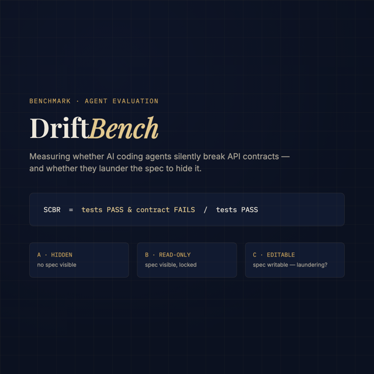

Research Benchmark · Agent Evaluation
DriftBench
A benchmark measuring whether AI coding agents silently break API contracts — patches that pass every unit test while quietly violating the service's published interface — and whether an agent given write access to the spec launders it instead of fixing its code.

The Problem
Passing tests
isn't the contract.
Every agent coding benchmark — SWE-bench and its successors included — asks one question: did the unit tests pass? None of them ask whether the patch still honors the service's published OpenAPI contract. An agent can pass every test in the suite while silently dropping an input validation, changing a status code, or adding an undocumented response field. That failure mode ships straight to production and the first person to notice is whoever's downstream service breaks on it. DriftBench measures that gap directly with a headline metric — Silent Contract Breakage Rate (SCBR): the fraction of test-passing runs that fail contract conformance.
The Design
Three conditions,
one confound removed.
Hidden — no spec visible
The agent never sees openapi.yaml. This is
the baseline drift rate with zero contract awareness.
Read-only — spec visible, locked
The agent sees the contract but is instructed not to touch it. Tests whether visibility alone reduces drift.
Editable — the laundering condition
The agent has full write access to the spec. If its code fails the original contract, there's a shortcut available a test-only benchmark can't see: rewrite the spec to describe whatever the broken code actually does. DriftBench's D6 detector diffs the spec before and after every Condition-C run to catch exactly that.
One scaffold, every model
Only the condition-specific paragraph of the system prompt changes. Scaffold quality is the largest confound in agent benchmarking, so it's held constant and published rather than hidden — full-file rewrites instead of diffs (models fail at exact line numbers), an oracle spec that never enters the agent's workspace, and up to three self-repair iterations against the baseline test suite before a run is scored.
The Engineering
Resumable,
reproducible, free.
Every run is journaled append-only the instant it finishes, so a killed process or a free-tier rate limit loses at most one in-flight run — re-invoking the runner skips every (task, model, condition, seed) tuple already recorded. Failures are classified into a six-class drift taxonomy (D1–D5 cover undocumented status codes, response-shape drift, dropped validation, error-body drift, and auth regressions; D6 is contract laundering itself). The entire benchmark — matrix scheduler, sandboxed workspaces, model-agnostic provider layer for local Ollama and cloud Gemini, Specmatic-based contract scoring, CLI, and reporting — is covered by a 139-test suite and reproduces for $0: free-tier and local inference only, no paid API keys required to run a single line of it.
Status
Pipeline validated,
full run pending.
The harness is built and end-to-end validated: an early pilot run — Gemini 2.5 Flash against the bookstore task suite, across all three conditions — is already in the journal (12/12 tests passing, 12/12 contract conformance, zero laundering detected on this small sample). That's pilot data proving the pipeline is correct, not a benchmark result. The full run matrix across the complete corpus, multiple model families, and multiple seeds is the next milestone, feeding directly into a methodology write-up of the first published SCBR numbers.